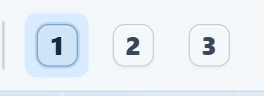
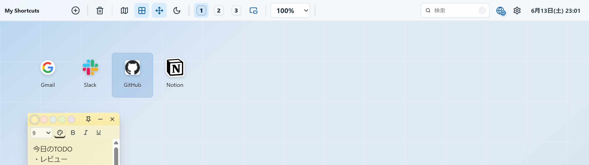
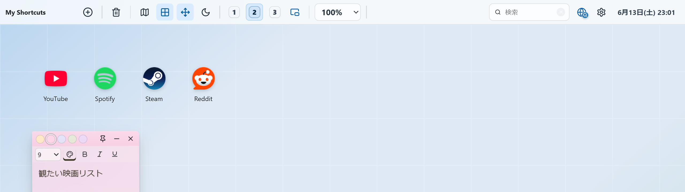
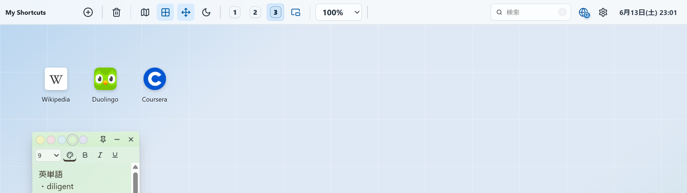

3つの画面を、用途で使い分け。
仕事用、趣味用、学習用。画面をまるごと切り替えて、いまやることだけに集中。
ワンタップ
1 / 2 / 3 で、ぱっと切り替え。
上部の番号を押すだけで、画面ごと入れ替わります。それぞれが独立した作業スペースなので、内容が混ざることはありません。頭の中まで、すっきり。
- 1 / 2 / 3 をワンタップで切り替え
- それぞれが独立したスペース
- 用途ごとに分けて、集中できる

上部の 1 / 2 / 3 ボタン。

たとえば、こんなふうに
3つの顔を、ひとつのブラウザに。
同じ並べ方でも、画面ごとにまったく別の作業台になります。

